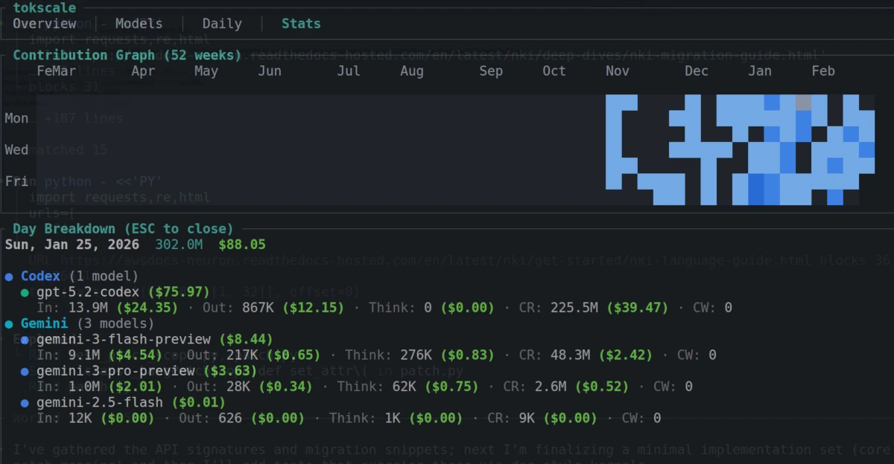

A list of how I use coding agents for triton-viz
Written by latentCall145 on January 30, 2026 (changelog)

My heaviest day of coding agent usage (visualized with tokscale).
I'm currently working on a project called triton-viz (github.com/Deep-Learning-Profiling-Tools/triton-viz) that's used to analyze kernels written in DSLs like Triton (currently there's a bit of support for NKI too, and we plan to add others in the future). There's a lot to be done, so I'm experimenting with using AI to do as much of my work as I can. This is a comprehensive list of ways I use LLMs in triton-viz.
I personally use Codex CLI because:
I also use Gemini CLI... but only for side projects (not for triton-viz). It's quite nice because it has really high daily quotas (according to API prices, they give ~$100 of Gemini 3 usage daily, at least for my $20/month Gemini Pro plan which students get free for a year). It also works pretty well for vibe coding (there's a ~5k LoC side project I've vibe-coded over 1-2 weeks that's mostly functional) as the models are good at coding, but Gemini CLI has a couple of problems that prevent me from using it for triton-viz:
I actually haven't tried Claude Code with Opus 4.5 yet. By the time I ramped up my coding agent usage, Codex worked fine for me and I wasn't in the mood for spending $17 for a month of Opus 4.5. I've tried Claude Code with Sonnet 4 and I still have it with GLM 4.7, but obviously Opus 4.5 is far better than both of these models so I can't really comment on model quality. I guess the UX is better than Codex? But it's not a big deal to me.
As for GLM 4.7, I have the cheapest plan ($6/month or $3/month if you buy for the first month/quarter). It was decently helpful in making some apps/reading codebases when I first got it, but GLM 4.7 is not as strong as Codex or Gemini and I feel like the model has been queued up more recently (i.e. not doing any tool calls or reading/writing any code) so I don't plan on renewing my subscription. I still think it's a good deal for the price, but Google gives out Gemini CLI for free and Codex CLI still "only" costs $20/month, so I'd recommend those two for now.
I think I still hand-write 60-80% and manually review 100% of the Python in my triton-viz PRs, mainly because prompting exactly what I want Codex to do (and then fixing its misunderstandings) would be harder than just coding myself. So when doing serious coding, I don't do anything crazy. I'll typically only be working on one PR at a time, with a Codex instance and an IDE up to navigate/handwrite code. In this case, LLMs are only an assistant. I don't try to keep the agent running continuously, and I wouldn't care that much if I had no LLM.
A comprehensive list of things I ask Codex (ranked from most to least frequent):
I vibe code on triton-viz for things that:
In this case, I can get up to three parallel Codex sessions at a time, each on a separate git worktree, and I usually don't bother reviewing the code, instead just running tests (or for the visualizer, running the UI myself) to make sure things run fine. For project worktrees, I have a root directory with the project name and each subdirectory is a branch within the project. I also have a script to make new worktrees and set it up (e.g. install environment packages). For triton-viz it's like:
triton-viz/
├── docs/ (worktree for 'docs' branch)
├── main/ (worktree for 'main' branch)
└── wt.sh (script to make a new worktree and install packages)
In addition to the stuff above, I also do these things more often when vibe coding:
When I use AIs to do something big (like https://github.com/Deep-Learning-Profiling-Tools/triton-viz/pull/247), I always talk with Codex to build up a plan of what exactly I want to do. Obviously this makes sure the LLM and I are on the same page, but planning also helps me understand what I want when LLMs ask me things I haven't thought through. My prompts usually go in this form:
"I want to accomplish [end goal]. Can you do [vague implementation plan]? Before writing any code, ask me clarification questions."
Here are some examples of real prompts I used for some PRs:
Example 1
I want to <endgoal>add some documentation to this project as we anticipate many newcomers will want to make their own extensions to this and need a gentle tour on the codebase</endgoal>. Can you <plan>add ARCHITECTURE.md files for core/, clients/, dsls/ (i renamed frontends/ -> dsls/ to avoid confusion with TS), visualizer/, frontend/? Each one should give: 1) definition of terms used within a folder (that are not publicly well known - i.e. 'DSL' doesn't count because this has a well known definition, but a 'client' does count as it has a specific meaning within the project), 2) brief description of the subsystems that the module uses, 2) Explanation of the logic flows in place that the module supports (e.g. how triton-viz traces through a kernel), 3) a crash-course on how a user is supposed to add an extension to the module (e.g. how to create another client in 'clients') which goes over required/optional patterns within the source code in the folder + why they're needed, 5) other stuff</plan>? be creative! let me know what you'd add into these docs before you start writing
Example 2 (used for https://github.com/Deep-Learning-Profiling-Tools/triton-viz/pull/247)
- The frontend is written entirely by AI agents so <endgoal>I need the codebase to be very clean and maintainable</endgoal>. Can you formulate a plan to <plan>refactor the codebase to allow this?
Some thoughts:
- DRY: Try to consolidate logic that should be shared (even if it isn't yet)
- Debloat: Remove features unless they prove to be useful.
- File structure: use directories to group modules of code, which adds documentation without a single README.
- Documentation:
- write ARCHITECTURE.md for the overall frontend, explaining core objects and data movement.
- write MANUAL.md for all user-facing code.
- Types: Use TypeScript instead of JavaScript to enforce typing, making debugging easier</plan>.
Let me know how many LoC we can save for each part of the plan.
For example 2, I also ask for how many lines of code each part of the plan can save, as I inspect LLM plans to see if I can simplify it. One of the things that I think LLMs will do worse than people for some amount of time is deciding which code can be removed. Because of this, during refactors, I ask the LLM to make a list of features that would simplify the code the most when removed, and I then choose what features actually could get removed.
This is a WIP protocol I'm working on (https://github.com/latentCall145/agent-skills) to try out large-scale, fully vibe-coded stuff. The idea is that I just ask it a bunch of todo tasks and then subagents will tackle each task in a structured way: they will make a new worktree, make a plan on what files to touch, code up the solution, review its code, and merge it into the main branch. I call it a "protocol" since I wanted subagents to predictably pass their work to other subagents, so I added some structure in how tasks are specified, where tasks are located, how to specify which stage a task is in, etc. I also intended for this to support parallel agents working on the same codebase, but it turns out that a single agent can clear out all of my todos pretty quickly, but I have it, I guess.
As for implementation details, I have an agent skill "high-level-plan" to turn the requests I have (in natural language) into formal todo items in a 'tasks/todos' folder. Each todo item is given its own file, and I separate the implementation of a feature into these steps (also implemented as agent skills):
And then I have a final agent skill 'run-overnight' which works from low-level planning to integration until all tasks are completed. I call it run-overnight, because... it's meant to be run overnight to knock out 10-20 tasks while I'm sleeping.
To get things started, I spawn an agent in the root directory (e.g. 'triton-viz/'), specify a base branch and a list of things I want done, use the high-level-plan skill to add it to the todo list, then say "run overnight". And hopefully in an hour, all of my tasks are complete! However, new bugs or regressions are added pretty often (typical vibe coding stuff), but I just say which bugs to fix in another high-level-plan session and then use run-overnight again. It's really stupid but it works surprisingly well. For the aforementioned "5k lines of code" project vibe-coded with Gemini CLI, I've only had to go in and manually inspect the code twice to fix stubborn issues. I've also used AI-Loop in triton-viz visualizer PRs to get work done when I'm AFK.
I still use chat interfaces to get quick answers to random questions since coding agents are slow and also because I don't want to waste coding agent context on what are basically Google searches (agents get worse the more that context is filled up). I prefer Gemini 3 Flash since it's fast, knowledgeable, and free. In addition, sometimes I use chat interfaces to semi-manually fix issues that coding agents get stuck on. For example, Codex once failed to extract a URL from some HTML because the HTML had a lot of backslashes. Furthermore, removing the backslashes the normal way caused another problem related to invalid Unicode characters. So I tried asking Codex 5.2 high in multiple ways and new chats to fix the problem but it kept failing. I probably spent 30 minutes to 1 hour prompting and waiting for its responses. Eventually I got tired of prompting and seeing Codex try weird approaches to solve the bug, so I came up with my own approach and asked Gemini how to do it. There were some other problems with my approach, but I got a solution ready in ~15 minutes. I'm not sure if Gemini got an answer so quickly because I chose an approach to solve the bug that Codex didn't commit to or if Gemini is just a better model than Codex in some cases. Either way, I think opening up a new chat is a good way to iron out the implementation for isolated problems where context about the rest of the project is distracting.